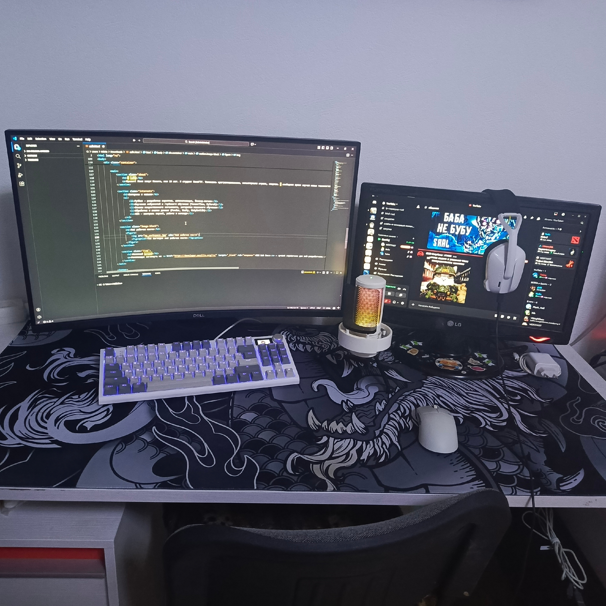

О себе
Привет! Меня зовут Никита, мне 20 лет. Я студент ПензГТУ. Увлекаюсь программированием, комьютерными играми, спортом. В свободное время изучаю новые технологии и совершенствую навыки Python. Стремлюсь стать python-разработчиком.
Интересы и навыки
- Python — разработка скриптов, автоматизация, бэкенд-логика
- Изучение нейросетей и глубокого обучения (TensorFlow, PyTorch)
- Основы искусственного интеллекта, алгоритмы машинного обучения
- Обработка и анализ данных (Pandas, NumPy, Matplotlib)
- Git — контроль версий, работа в команде
Моё рабочее место

Полезный ресурс
Рекомендую заглянуть на MDN Web Docs — лучший справочник для веб-разработчика.